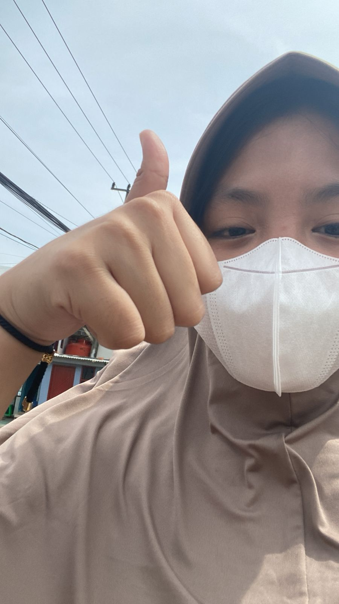
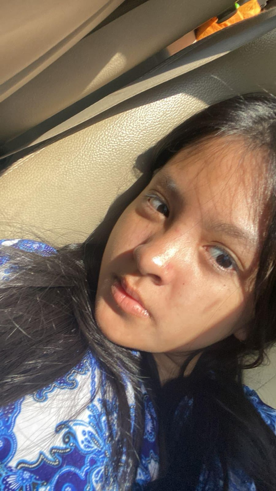
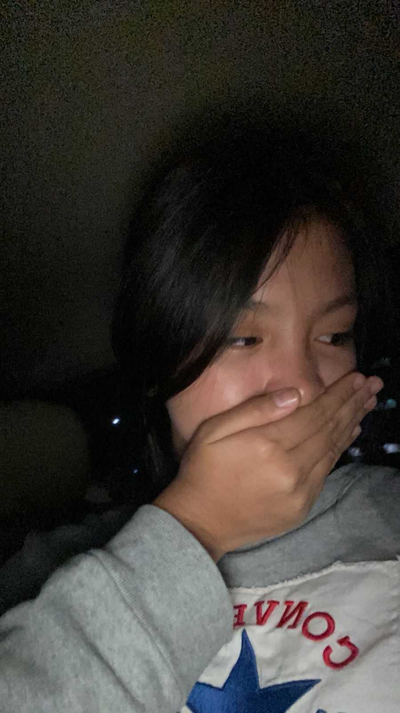

Untuk Adee,
Haii Adek ngga kerasa ya udah makin dewasa bentar lagi juga mau masuk SMA HBD ya!! kalau ade buka ini mungkin dengan kaka yang ngga ada lagi buat ade dan juga maaf yah kaka cuman bisa ngasih ini buat adek tapi keknya ini effort terakhir kaka kado pertama dan terakhir dari kaka buat adek maaf kaka selalu mempermasalahkan hal hal kecil yang menurut ade biasa aja tapi itu semua karna kaka butuh ade ko dan kaka juga sadar sekarang keknya emang kita ngga bisa lagi buat kayak dulu setelah banyaknya masalah dari kita dan setelah berkali kali kaka memperbaiki kita dan setelah berkali kali kaka ngusahain ini terkadang lucu sih hubungan yang selucu kemarin yang di mana saling butuh saling ngabarin saling excited saling fast respon jadinya malah mau bales balesan sekarang ya kalau mau di bilang kangen sih iya tapi keknya uda ngga bisa lagi terlepas dari ade yang sering hilang ilangan dan terlepas dari kesibukan ade yang ngga selesai selesai itu dan bahkan setiap kaka mendengar omongan orang kaka nanemin ke hati kaka "oh pasti ade bakal sadar" tapi lama kelamaan keknya semua itu sia sia aja dan bahkan sampai kaka mikir "emang mau samapai kapan gini terus" sia sia aja berulang ulang kali kaka nangis berulang ulang kali kaka coba buat bertahan berulang ulang kali kaka menjelaskan ke ade berulang ulang kali kaka mencoba buat memaklumi berulang ulang kali kaka mencoba buat ngga ovt berulang ulang kali kaka mencoba turinin ego kaka bahkan sampai di fase cape dan sadar dan bukannya ade ya dulu bilang ke kaka "harus setara" kalau ade tau semuanya hanya kaka mau ade itu sadar dan kita sekarang uda flat banget ya..tapi tau ngga si lucunya apa terkadang kalau kaka mau ngelakuin sesuatu kaka sering buka wa ade loh yang dimana chat kaka juga belum di bales bahkan sampai berhari hari dan keknya sekarang kaka sadar ade ngga butuh kaka terlepas dari itu kaka bakal ngelepas ade lucu sih niatnya mau bikin ade sadar malah kaka sendiri yang dibuat sadar dan jujur bahkan di saat kaka ngetik ini aja kaka sampe nangis loh maafin kaka yang dulu yang ngga peka sama ade ngga ngertiin perasaan ade bahkan kalau perbuatan itu semua yang bikin ade jadi sekarang kaka maklumin ko kalau juga ade benci ke kaka gapapa ko dan setelah ini kaka usahain buat ngga ganggu ade lagi buat ngga nyari "ade kemanaa" atau "ade uda pulang" dan semuanya jujur kaka seneng banget uda berkesempatan bertemu dengan soseorang sehangat ade dan tolong buat lupain semua tentang kaka bahkan jangan anggap kaka lagi setelah ini jaga diri baik baik ya kurangin tidur kemalaman nanti buat siapa pun yang gantiin kaka tolong perlakukan dia dengan baik ya dan jaga perasaannya ya bahkan jangan buat nangis oh iya satu lagi BIRTHDAY ADEEEEKK
Dari
Kaka